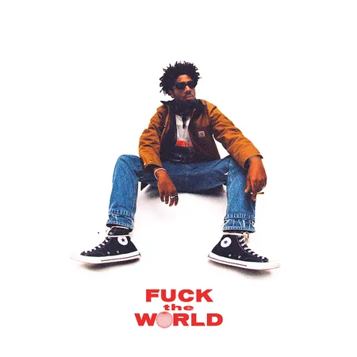
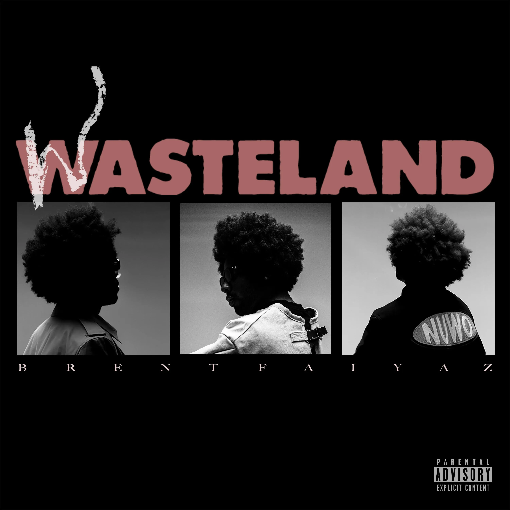

Clouded
A smooth and atmospheric track with Brent's recognizable R&B sound.
Singer • Songwriter • R&B Artist
Discover the music, albums and creative world of Brent Faiyaz.
Explore MusicBrent Faiyaz is an American R&B singer and songwriter known for his smooth vocals and distinctive musical style.
His music explores relationships, emotions, success and modern life through atmospheric R&B production.
View AlbumsSome popular songs from Brent Faiyaz.
A smooth and atmospheric track with Brent's recognizable R&B sound.
One of Brent Faiyaz's well-known tracks, combining confident lyrics and dark production.
A melodic song that highlights Brent's emotional and minimal style.
A popular track featuring smooth vocals and modern R&B production.
A relaxed and melodic song from the Wasteland era.
A modern Brent Faiyaz track with his signature emotional R&B atmosphere.
Explore some projects from Brent Faiyaz.
An early studio album that introduced Brent's atmospheric R&B style.

A project featuring songs such as Clouded and Dead Man Walking.

A major Brent Faiyaz project combining alternative R&B with cinematic production.